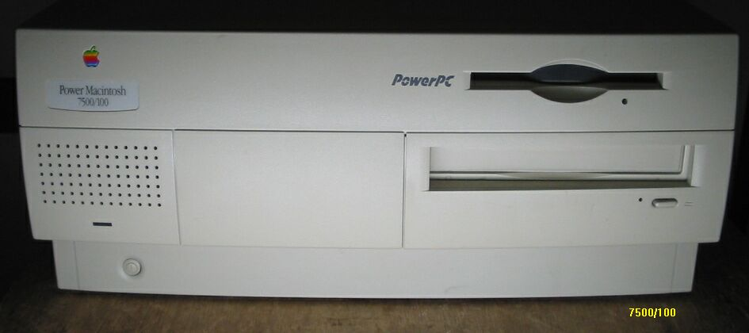
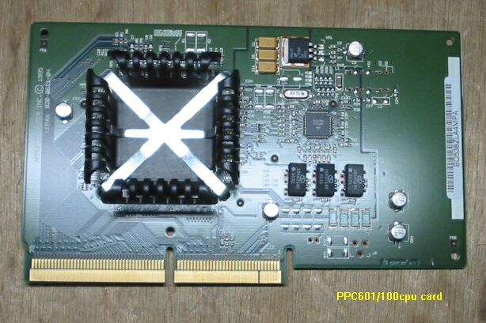
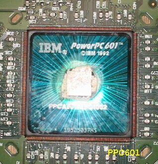
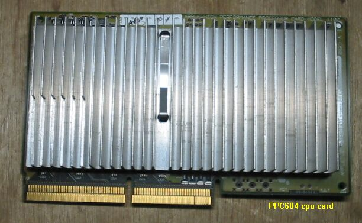

PowerMac7500

この7500は、最近、近所のジャンクショップで、ノーチェック本体のみで2000円 、の値札が付けられていたのを買ってきたものです。改造7500は持っていますが、中身とケースが同じものは初めてです。
内容は以下のようになっていました。604のcpuカードが余っていましたので交換してあります。
・CPU PPC601 100MHz （604e180MHzに交換）
・HD SCSI 1GB
・CDROM SCSI 4倍速
・FDD
・RAM 48MB （32MBを追加し、96MB）
・VRAM 2MB
（2003/05/07記）
PPC601 cpu card

POWERのいわれですが、これは力のPowerとは直接関係なく、元々IBMで開発されたRISCプロッセサ
アーキテクチュアに付けられた名前です。Perfomance Optimization With Enhanced RISC（拡張RISC
でのパフォーマンス最適化）の頭文字をとっています。
PPC601 cpu

IBM製のPPC601です。撮影時の光の加減で虹彩のようなものが見えます。
PPC604 CPU card

PPCマッキントッシュのページに戻る